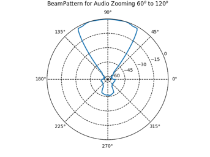
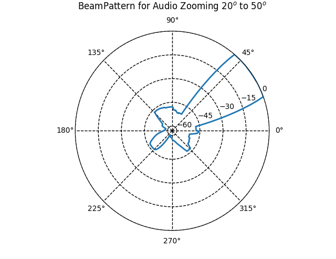

Demo
Left: Wall mounted microphone array. Target region is about 60° to 120° in the horizontal plane. When the speaker moves outside the designated area, his voice is not effectively captured. Middle: Wall mounted microphone array. A speaker uses a remote controller to modify the target region size, transitioning from a wide coverage to a narrow focus. Throughout this adjustment, the captured sound diminishes progressively from both speakers to a single speaker and eventually to complete silence. Right: Ceiling mounted microphone array. Initially, the target region encompasses the entire space, allowing the simultaneous capture of all three speakers' voices. Subsequently, the target region size is narrowed to the table area, resulting in the suppression of the standing speaker's voice.Beam Pattern
The plot of beam pattern shows the sharp and clear FOV boundary by deep audio zooming. Usually there is 45+dB suppression for sound outside the target FOV region.
|
 Target FOV region 60° to 120° |
 Target FOV region 20° to 50° |